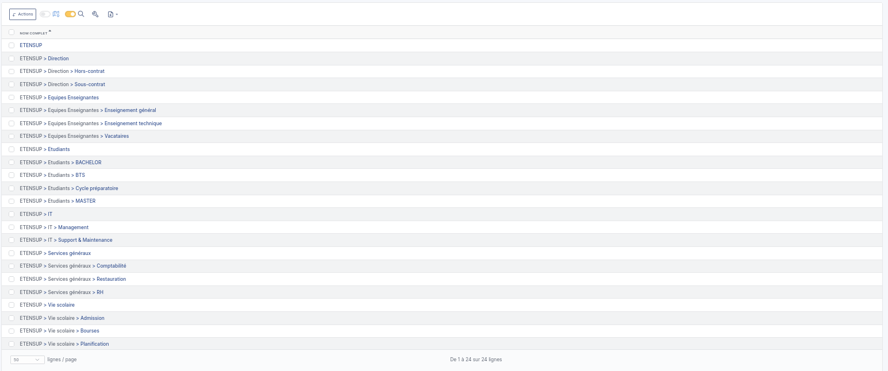
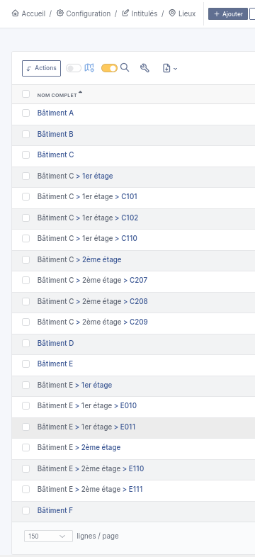
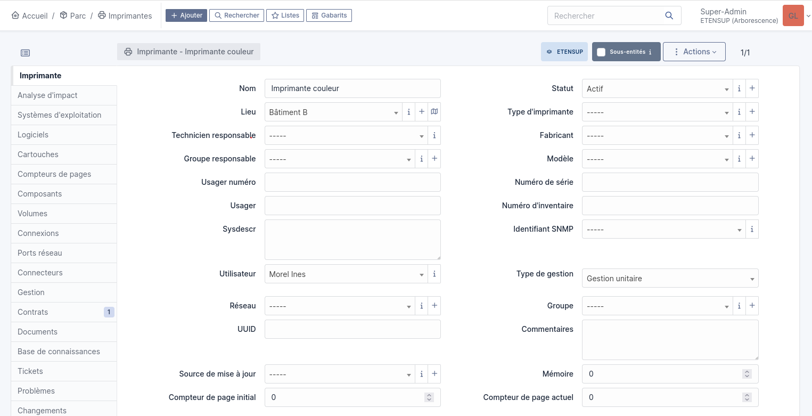
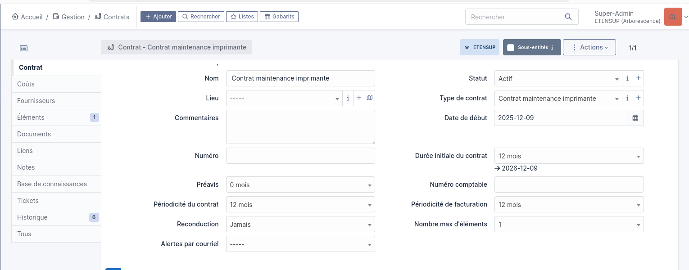
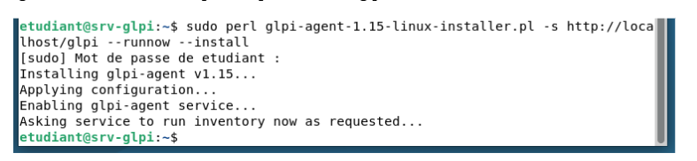
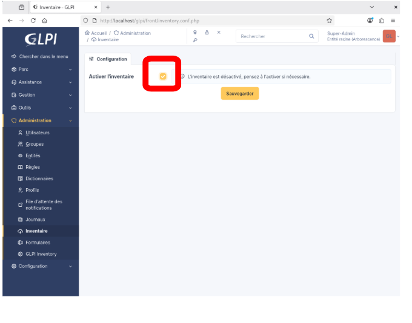
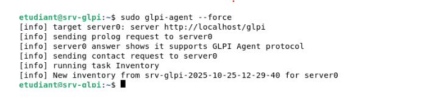
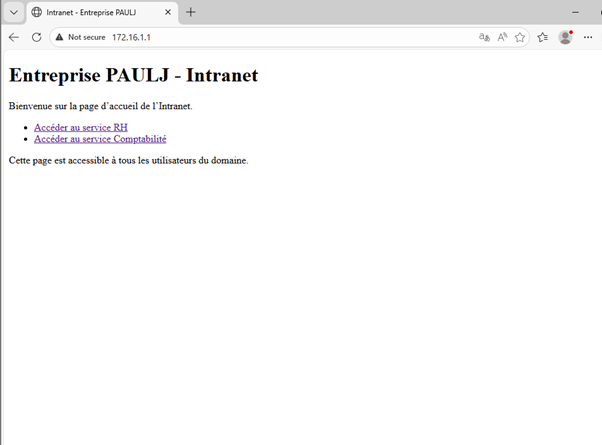
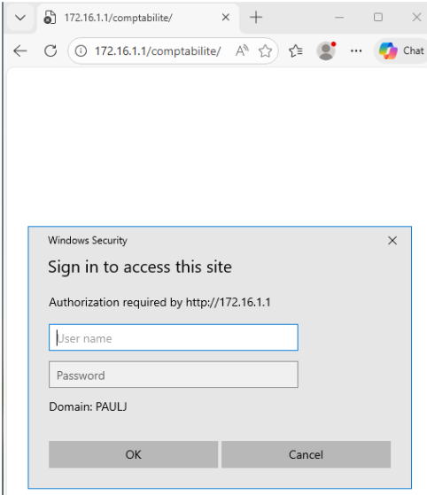

Étudiant en BTS SIO spécialité SISR
Je m'appelle Paul Jacquin-Bruyère et je suis actuellement en 1ère année de BTS SIO option SISR (Solutions d'Infrastructure, Systèmes et Réseaux).
Dans un monde où les technologies sont omniprésentes, j'aime comprendre le fonctionnement réel des systèmes informatiques et ce qu'il se passe réellement "sous le capot". Cette curiosité me pousse à apprendre et à approfondir mes connaissances dans les systèmes, les réseaux et la cybersécurité.
J'apprécie particulièrement les environnements où il faut analyser, comprendre et résoudre des problèmes techniques car ils me permettent de développer ma logique et ma réflexion.
En dehors de l'informatique, je suis également passionné par le sport en général, un domaine qui m'apporte esprit d'équipe, discipline et persévérance.
Dans le cadre d’un AP de gestion de parc informatique, j’ai utilisé GLPI afin de recenser et organiser les ressources numériques d’une organisation. J’ai commencé par créer la structure de l’établissement ETENSUP en renseignant ses informations d’organisation dans GLPI :

J’ai ensuite renseigné les lieux et bâtiments de l’établissement afin d’organiser géographiquement le parc informatique :

J’ai créé plusieurs ressources dans GLPI afin de représenter différents équipements du parc informatique de l’organisation, notamment des ordinateurs, téléphones, moniteurs et imprimantes. Sur cette capture, on peut voir la création d’une imprimante avec ses informations principales comme son emplacement, son utilisateur associé et son type de gestion :

J’ai également créé un contrat de maintenance associé à l’imprimante afin de simuler la gestion du support et du suivi matériel au sein du parc informatique. Ce contrat permet de centraliser les informations de maintenance comme la durée, la périodicité et les dates de validité :

J’ai mis en place l’agent GLPI sur les équipements à inventorier afin d’automatiser la remontée des informations matérielles et logicielles vers le serveur de gestion de parc :

J’ai activé la fonctionnalité d’inventaire depuis l’interface d’administration de GLPI afin d’autoriser la remontée des informations des équipements vers le serveur :

J’ai ensuite exécuté la commande sudo glpi-agent --force sur le poste désiré afin de lancer immédiatement un inventaire et transmettre les informations matérielles et logicielles au serveur GLPI. Le terminal confirme que la connexion avec le serveur a été établie et que l’inventaire a été envoyé avec succès :

Dans le cadre du projet d'AP WEB-M2L, j'ai participé au développement d'un site web visant à améliorer la présence en ligne de la Maison des Ligues de Lorraine. Le site rassemble les différentes ligues sportives, leurs activités et leurs informations pratiques.
Dans le cadre du projet Web de la M2L, le travail a été réalisé en équipe de cinq personnes. Le projet nécessitait une organisation collaborative afin de répartir les tâches entre les membres du groupe et assurer une cohérence globale du site.
Afin de travailler efficacement en équipe, nous avons utilisé Git et GitHub pour centraliser le projet, partager les modifications et suivre l'évolution du développement. Cette méthode nous a permis de collaborer sur le même projet tout en évitant les conflits de versions et en facilitant la coordination entre les différents membres du groupe.
Je me suis occupé de la rubrique "Athlétisme" en mettant en œuvre une interface moderne en HTML5 et CSS en respectant le thème global du site
Dans le cadre d'un TP sous Windows Server 2022, j'ai déployé un serveur web IIS afin de mettre à disposition un service Intranet accessible aux utilisateurs du domaine. L'objectif était de créer une page d'accueil accessible à tous ainsi que plusieurs sections réservées à des groupes spécifiques de l'entreprise, comme le service RH et le service Comptabilité.
J'ai installé et configuré IIS, créé les différentes applications web puis mis en place une gestion des accès basée sur l'authentification Windows, les groupes Active Directory et les permissions NTFS. J'ai également créé les groupes de sécurité correspondants dans l'Active Directory et associé les utilisateurs aux bons groupes afin de limiter l'accès aux sections sensibles du site.
Enfin, j'ai réalisé plusieurs tests d'accès avec différents comptes utilisateurs afin de vérifier le bon fonctionnement du service et la cohérence des autorisations mises en place. Les utilisateurs appartenant au bon groupe pouvaient accéder aux sections autorisées tandis que les autres utilisateurs étaient bloqués par une demande d'authentification.


Rapport annuel de l'ANSSI sur l'évolution des menaces cybernétiques : ransomwares, espionnage, attaques d'infrastructure. Indispensable pour comprendre le paysage des risques actuels.
Le modèle Zero Trust redéfinit la sécurité réseau : ne jamais faire confiance, toujours vérifier. Un paradigme clé pour sécuriser les infrastructures modernes et les accès distants.
| Compétences | Niveau de maîtrise | Indicateurs de performance | ||||
|---|---|---|---|---|---|---|
| 1 | 2 | 3 | 4 | 5 | ||
Gérer le patrimoine informatique
|
Le recensement du patrimoine informatique est exhaustif et réalisé au moyen d’un outil de
gestion des actifs informatiques. Les référentiels, normes et standards sont mobilisés de façon pertinente. Les droits mis en place correspondent aux habilitations des acteurs. Les conditions de continuité et de reprise d’un service sont vérifiées et les manquements sont signalés. Les sauvegardes sont réalisées dans les conditions prévues conformément au plan de sauvegarde. Les restaurations sont testées et opérationnelles. Les écarts par rapport aux règles d’utilisation des ressources numériques sont détectés et signalés. |
|||||
Répondre aux incidents et aux demandes d'assistance et d'évolution
|
En utilisant les outils adaptés, les demandes d’assistance ont été prises en compte,
correctement diagnostiquées et leur traitement correspond aux attentes. La réponse à une demande d’assistance est conforme à la procédure et adaptée à l’utilisateur. La méthode de diagnostic de résolution d’un incident est adéquate et efficiente. Une solution à l’incident est trouvée et mise en œuvre. Le cycle de résolution des demandes respecte les normes et standards du prestataire informatique. L’utilisation d’un logiciel de gestion de parc et d’incidents est maîtrisée. Le compte rendu d’intervention est clair et explicite. La communication écrite et orale est adaptée à l’interlocuteur. |
|||||
Développer la présence en ligne de l'organisation
|
L’image de l’organisation est conforme aux attentes et valorisée. Les enjeux économiques liés à l’image de l’organisation sont identifiés et les obligations juridiques sont respectées. Les mentions légales sont accessibles et conformes à la législation. La visibilité des services en ligne de l’organisation est satisfaisante. Le site Web a évolué conformément au besoin exprimé. |
|||||
Travailler en mode projet
|
Les objectifs et les modalités d’organisation du projet sont explicités. L’analyse des besoins et de l’existant est pertinente. Les activités personnelles sont planifiées selon une méthodologie donnée et les ressources humaines, matérielles et logicielles nécessaires sont mobilisées de manière efficace et pertinente. Le découpage en tâches est réaliste. Les livrables sont conformes. Le projet est documenté. Un compte rendu clair et concis est réalisé et les écarts sont justifiés. La communication écrite et orale est adaptée à l’interlocuteur. |
|||||
Mettre à disposition des utilisateurs un service informatique
|
Des tests pertinents d’intégration et d’acceptation sont rédigés et effectués. Les outils de test sont utilisés de manière appropriée. Un rapport de test du service est produit. Un support d’information est disponible. Les modalités d’accompagnement sont définies. Le service déployé est opérationnel et donne satisfaction à l’utilisateur. |
|||||
Organiser son développement professionnel
|
Les besoins de formation sont identifiés pour assurer le support ou mettre à disposition un service. L’environnement d’apprentissage personnel est délimité et expliqué. La veille est régulière et vise à : - repérer les techniques et technologies émergentes du secteur informatique - utiliser de manière approfondie des moyens de recherche d'information - renforcer ses compétences. L’identité professionnelle est pertinente et visible sur un réseau social professionnel. |
|||||